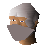
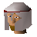

Camelot Castle
Location at 2763, 3505 · Kingdom of Kandarin
Open on the world map → Open in knowledge graph → Below: Camelot Castle (underground)
NPCs
| NPC | Level | Spawns | Notable drops |
|---|---|---|---|
| 49 | 3 | Coins, Iron 2h sword, Black kiteshield, Steel axe | |
| 5 | 1 | ||
| 4 | |||
| 4 | |||
| 1 | |||
| 1 | |||
| Sir Bedivere | 1 | ||
| 1 | |||
 Sir Kay | 1 | ||
| Sir Lancelot | 1 | ||
| 1 | |||
 Sir Palomedes | 1 | ||
| Sir Pelleas | 1 | ||
| Sir Tristram | 1 |